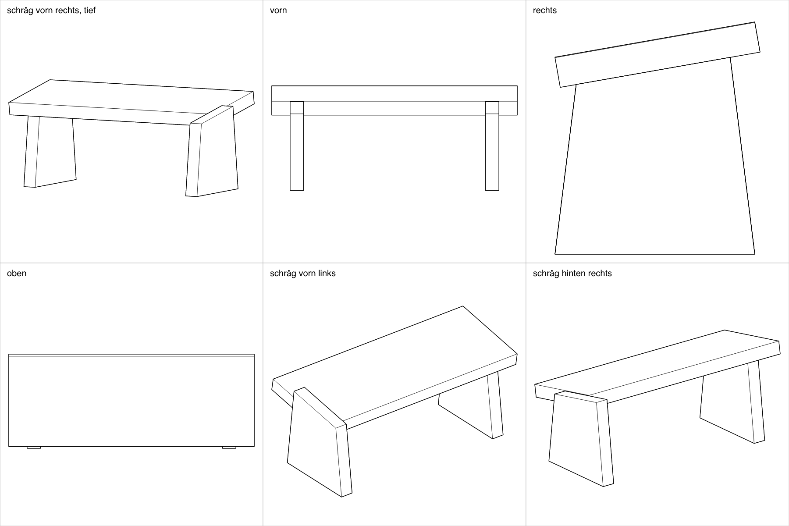
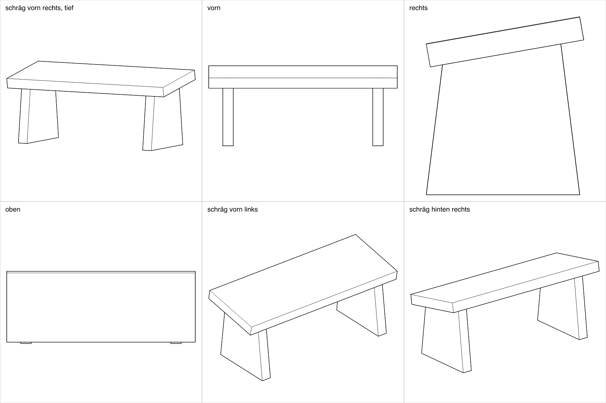
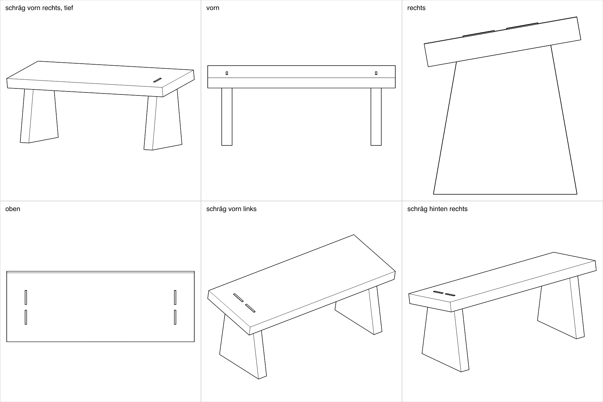
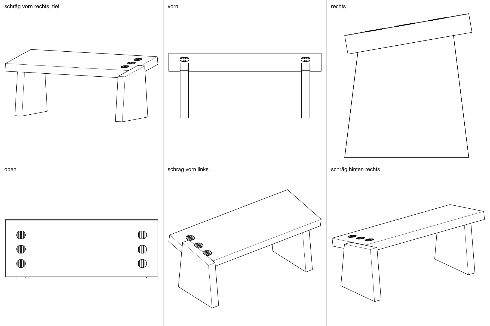

Gebetshocker
Ein kleiner Hocker zum Knien: ein Sitz, zwei Wände, 470 mm breit. Er ist hier fünfmal anders verbunden, jedes Mal so, dass man ihn in der offenen Holzwerkstatt im GZ Hirzenbach ohne CNC bauen kann. Das Holz ist ein Stück Eichen-Arbeitsplatte, 1000 × 394 × 26, längs halbiert: ein Streifen pro Hocker. Der einfachste steht zuerst. Jeder Plan hat zwei Blätter, vom Brett bis zum Öl, jeder Schritt mit Zeichnung, Einstellung und Zeit. Gebaut und geprüft ist noch nichts; durchgesehen haben die Pläne Sprachmodelle, keine Schreiner.
Mit Nut und Stiften

Jede Wand steht mit ihrem ganzen Kopf in einer Nut unter dem Sitz, zwei Stifte gehen von oben hinein. Ohne Leim. Der einfachste: Sägen, eine Nut fräsen, durch Sitz und Wand zugleich bohren. Zeit: ca. 8 h 50 min, 2 Samstage.
Mit Gratleisten

Die Wand hat oben eine Gratleiste und wird von vorn in eine Gratnut unter dem Sitz geschoben. Ohne Leim, von oben unsichtbar. Die Passung stellt ein keilförmiger Streifen ein, nicht das Messen. Zeit: ca. 8 h 15 min, 2 Samstage.
Mit zwei Keilzapfen

Zwei Zapfen je Wand gehen durch den Sitz und werden oben verkeilt. Ohne Leim. Mehr Handarbeit mit dem Stecheisen. Zeit: ca. 9 h 10 min, 2 Samstage.
Mit Rundzapfen

Drei runde Zapfen je Wand, aus dem Holz geraspelt, durch den Sitz und verkeilt. Ohne Leim. Das Raspeln allein braucht gut zwei Stunden. Zeit: ca. 13 h 15 min, 3 Samstage.
Mit Domino

Drei Dominos je Wand, unsichtbar, mit wenig Leim. Am schnellsten, aber jedes Nutenpaar muss genau treffen. Zeit: ca. 7 h 25 min, 2 Samstage.